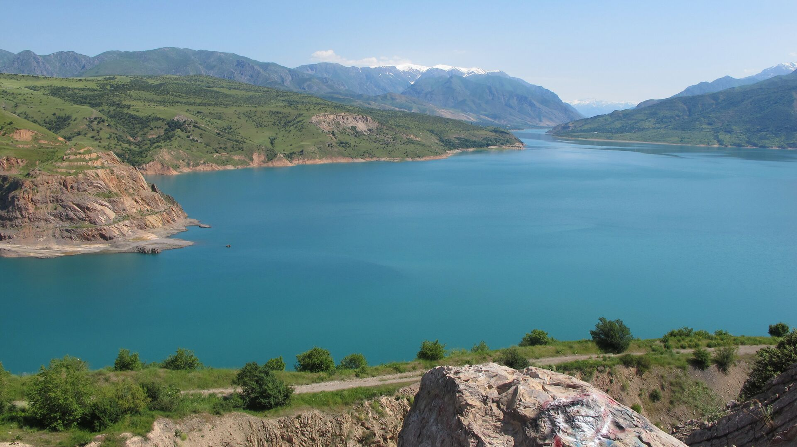
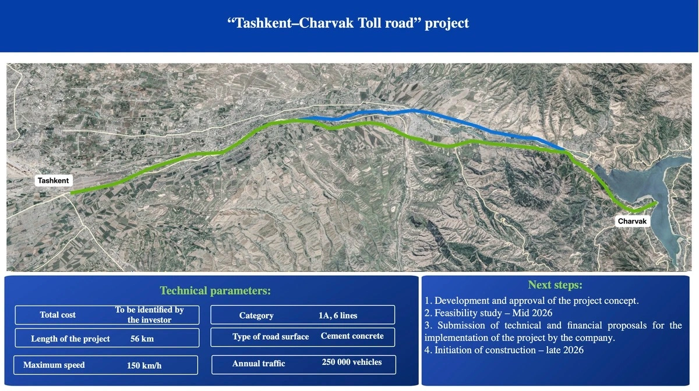

Toshkent va Chorvoq o‘rtasida yangi avtomobil yo‘li qurilishi rejalashtirilmoqda. Bu haqda transport vaziri Ilhom Mahkamov «O‘zbekiston 24» telekanaliga bergan intervyusida ma’lum qildi.
Vazirning ta’kidlashicha, loyiha «Chorvoq–Chimyon» rekreatsion zonasini rivojlantirish dasturining bir qismi hisoblanadi. Mazkur yo‘l qurilishi orqali Toshkent viloyati hamda Sirdaryo viloyati yo‘nalishida transport qatnovi yaxshilanadi. Bu esa hududdagi turizm salohiyatini oshirishga va aholi hamda sayyohlar uchun qulaylik yaratishga xizmat qiladi.
Loyihaning konsepsiyasi allaqachon taqdim etilgan. Qurilish ishlari tanlov asosida belgilangan yetakchi kompaniyalar tomonidan amalga oshiriladi. Jarayonda davlat-xususiy sheriklik mexanizmi qo‘llanilishi ko‘zda tutilgan. Ilhom Mahkamovning so‘zlariga ko‘ra, mavjud yo‘lga ta’sir qilmasdan, yangi Toshkent–Chorvoq avtomobil yo‘li qurilishi boshlanadi. Bu yo‘l rekreatsion hududga sayohat vaqti va yo‘l sifatida sezilarli o‘zgarish yaratadi.

Bu yangi yo‘l nafaqat masofani qisqartirish, balki O‘zbekistonda ilk bor joriy etilayotgan yirik pullik yo‘l loyihalaridan biri bo‘lishi bilan ahamiyatlidir. Transport vazirligi ma’lumotlariga ko‘ra, bu yo‘l Toshkent shahridan chiqishdagi tirbandliklarni kamaytirish uchun mavjud yo‘llarga muqobil sifatida quriladi va u asosan Chirchiq daryosi bo‘ylab o‘tishi rejalashtirilgan. Loyihaning umumiy qiymati bir necha yuz million dollarni tashkil etishi kutilmoqda va u xorijiy investorlar (xususan, Turkiya kompaniyalari bilan muzokaralar olib borilgan) ishtirokida barpo etiladi. Yo‘lning texnik tavsifiga ko‘ra, u birinchi toifadagi, yuqori tezlikda harakatlanishga mo‘ljallangan zamonaviy magistral bo‘ladi, ya’ni unda svetoforlar bo‘lmaydi va harakat xavfsizligi maksimal darajada ta’minlanadi. Shuningdek, bu yo‘l bo‘yida yangi xizmat ko‘rsatish ob’ektlari, ya’ni zamonaviy kempinglar, yonilg‘i quyish shoxobchalari va dam olish maskanlari qurilishi ham loyihaning ajralmas qismidir. Bu infratuzilma Bo‘stonliq tumanidagi "Amirsoy" va "Bildirsoy" kabi yirik kurortlarga borish vaqtini deyarli ikki barobarga qisqartirishi kutilyapti. Davlat-xususiy sheriklik asosida qurilgani uchun yo‘ldan foydalanish ma’lum miqdordagi to‘lov evaziga amalga oshiriladi, biroq aholi uchun doim bepul bo‘lgan eski muqobil yo‘l ham o‘z faoliyatini davom ettiraveradi.
